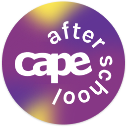

Service Design
Chicago Arts Partnerships in Education (CAPE)
Mapping a service from every angle, and rebuilding a brand to help it reach more students.
Mapping a service from every angle, and rebuilding a brand to help it reach more students.


Engaged June 2021-2022 with CAPE, bringing arts programs into Chicago classrooms.
High school program attendance lagged behind CAPE's lower-grade programs.
A service blueprint and refreshed brand identity to support recruitment.
Project Lead & Designer
Solo, with occasional support from 1-2 designers.
Led discovery, service design, and the full brand refresh.
Chicago Arts Partnerships in Education (CAPE) brings visual, digital, and performing arts into CPS classrooms by pairing professional teaching artists with teachers, integrating art, music, theater, and dance into curriculum, and partnering with researchers to measure their programs' impact.
Compared to their lower-grade programming, CAPE's high school after-school arts programs struggled with attendance. They wanted to understand why, and find ways to improve enrollment.
To start, I led a series of discovery workshops with CAPE to understand how the after-school program actually ran throughout the school year. This was done once a week during the early part of this project. CAPE told us how helpful it was just to talk through their process out loud, and using visuals in these sessions helped turn abstract thinking into something we could actually work with together. Out of this, the scope took shape: improving the program at a service level, and building CAPE branded assets to support their marketing.
I led this engagement over about ten months, with 1-2 designers involved throughout. Due to the volunteer nature of the project, towards the end of the engagement, I ended up facilitating most of it myself.
I led a series of collaborative sessions with CAPE to build a service blueprint, mapping what actually happens across the school year in granular detail. We looked at the experience from multiple perspectives, the student, the coordinator, the teacher, the school admin, to understand how these relationships connected and where they were affecting recruitment.
That work surfaced something important: the relationship between CAPE's coordinator and their school liaisons mattered more than expected, since liaisons were the ones actually spreading the word about the program. From there, I shaped strategies around it: a regular meeting cadence with liaisons, better data tracking, and new ways to market the program.
Since marketing was central to the fix, I led the effort to establish a new brand identity for CAPE's after-school program, starting with defining the brand's vision alongside CAPE.
From there, I used Pinterest to align on visual direction across a series of sessions, working with CAPE to mature their existing branding: a darker, glossier palette, and a bolder typeface meant to feel more fresh and confident.
Alongside the service-level improvements, I designed a set of branded assets for CAPE: poster and Instagram templates in Canva, an updated logo, sticker templates, and a new style guide.
Midway through the engagement, my main point of contact at CAPE moved on from his role, but the relationship never lost momentum. He'd kept two colleagues closely involved throughout the project, so even after he left, and even after one of them also moved on near the end, the work stayed on track without missing a beat. I really enjoyed this project.
Since our engagement ended at delivery, I never had visibility into whether attendance actually improved after this. With that said, the blueprint and brand gave CAPE real tools to work with going forward.
{kind=link}
{kind=link}
{kind=link}
{kind=link}
{kind=link}
{kind=link}
{kind=link}
{kind=link}